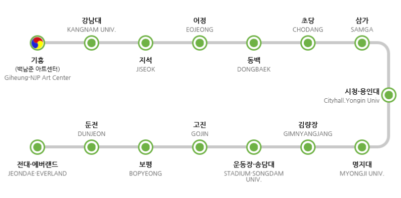

사진테그img
픽사베이 에서 무료 사진 다운로드
오디오 태그 audio
비디오 태그
사진테그img
비디오 태그
목록(목차)
순서가 없는 목록 ul: unlist//목차에 번호가 없고 글머리 존재
목록(목차)
순서가 없는 목록 ul: unlist//목차에 번호가 없고 글머리 존재
유튜브 영상
#개기 통신에서 기다리기 어려운 장애인 손님을 위하여 탑승 예약을 도와드리고 있으니 근무자에게 문의해 주시기 바랍니다
에버리안 종점에 내려서 셔틀버스(무료)로 에버랜드.
캐리비안 베이까지 이동.
#에버라인 운행시간: 05:30~23:30
-5002번:산논현역-강남역-앙재역 경유
-5700번 강번역-잠실역-송파역-수서역 경유
66~4번:수원역-수원-동백-용인 경유
하이퍼링크 a 태그
에버랜드 홈페이지 이동구글 지도
구글지도에서 지역 검색=>공유=>지도 퍼가기
▶ 대중교통
[지하철]
① 4호선 한대앞역 1번 출구 횡단보도 건너편 정류소 : 101번, 98번 이용 한국디지털미디어고등학교 앞 하차
② 4호선 중앙역 또는 고잔역 : 택시 이용
[버스] - 한국디지털미디어고등학교 앞 하차
① 서울 영등포 : 좌석 320번
② 시흥 오이도 : 98번
③ 수원 : 110번 / 11번, 707번, 909번(상록수역 또는 한양대역앞에서 시내버스 101번, 90번으로 환승)
④ 인천 : 안산시외버스터미널행 직행버스 탑승 후 안산시청 앞 하차 101번 이용
▶ 자가용
고속도로 안산 IC이용(400M) → 첫번째 사거리에서 우회전(500M) → 첫번째 사거리에서 직진하여 꽃빛공원으로 진입 (300M)→ 학교후문
네비게이션에서 꽃빛공원을 검색하면 후문과 연결되어 있습니다.